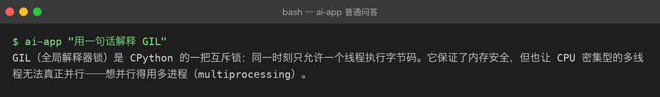
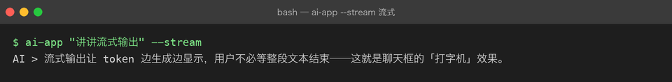
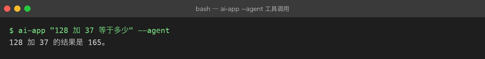
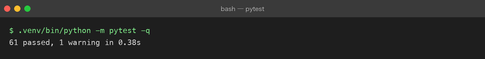

Project 03 — AI Application
项目目标
从 Service 升级到真正的 AI 应用层，掌握 LLM Application【大模型应用】核心能力。
为什么做这个项目
会调 API 不等于会做应用。LLM Application 有自己的核心问题：Prompt 设计、流式输出、函数调用、结构化输出——这些是每个 AI 工程师每天都在处理的事情。
解决什么问题
- Prompt 怎么写才能让模型稳定输出？
- 怎么让用户看到打字机效果（Streaming）？
- 怎么让模型返回 JSON 而不是自然语言？
- 怎么让模型调用外部程序？
最终能力
调用 LLM
↓
控制模型
↓
管理上下文
↓
获取结构化结果
↓
调用外部程序能力
↓
形成完整 AI Application技术栈
- Prompt Engineering 方法论
- Streaming / SSE（Server-Sent Events）
- Function Calling / Tool Use
- Structured Output（Pydantic + JSON Mode）
- Multi-turn Conversation Management
- Token / Context Window 管理
项目演进
Engineering AI Assistant Service
↓ Prompt + Streaming
AI Chat Web v0.1
↓ Function Calling + Structured Output
AI Chat Web v0.2
↓ 前端 Chat UI
AI Chat Web v1.0Milestones
| # | Milestone | 状态 | 核心能力 |
|---|---|---|---|
| 01 | Prompt | ✅ | 四要素 / 模板化 / Prompt 注入 |
| 02 | Messages | ✅ | 四种 role / 历史回灌 / 消息校验 |
| 03 | Structured Output | ✅ | JSON Mode / Pydantic / 校验重试 |
| 04 | Streaming | ✅ | SSE / 打字机 / 截断与乱码 |
| 05 | Conversation Memory | ✅ | token 预算裁剪 / 摘要 / 会话隔离 |
| 06 | Model Parameters | ✅ | temperature / top_p / 场景 Profile |
| 07 | Token / Context Window | ✅ | 估算 / usage / 成本核算 |
| 08 | Function Calling | ✅ | 工具循环 / 结果回灌 / 安全边界 |
| 09 | Application Architecture | ✅ | 五层结构 / 可观测 / 测试策略 |
状态：✅ 内容已就绪 · 🔄 代码落地中 · ⬜ 未开始
当前状态
9 / 9 个 Milestone 已全部成文 + src/ 代码落地 + 61 个离线测试全绿（文档先行 → 代码落地 → 测试覆盖 → 真实运行验证）。
当前版本
v0.2 文档 + 代码双全：四条核心路径（普通问答 / 流式 / 结构化 / 工具调用）已用 FakeClient 离线跑通，无需真实 Key 即可复现。接入真实 DeepSeek 只需在 .env 填入 DEEPSEEK_API_KEY。
真实运行（离线冒烟，FakeClient）
下列截图全部由 src/ 真实运行产出（ai-app ... --fake 或脚本化 FakeClient），不联网、不花钱，可复现：
① 普通问答

② 流式输出（打字机）

③ 结构化输出（Pydantic + JSON Mode）

④ 工具调用（Function Calling）

⑤ 离线测试 61 / 61 通过

项目结构
src/assistant/ # 五层结构（见 09 章）
├── cli.py api.py # 接入层
├── service.py agent.py# 编排层
├── prompts.py schema.py tools.py # 能力层
├── client.py settings.py # 模型层（唯一知道 API 细节）
└── memory.py tokens.py logging_setup.py # 支撑层
tests/ # 全部离线（FakeClient），不联网、不用真实 Key已掌握能力
- Project 01-02 的所有能力（Python 工程化、async、FastAPI、pytest）
下一步
- ✅ 已落地
src/并跑通四条路径（普通问答 / 流式 / 结构化 / 工具调用） - ✅ 已配真实运行截图，P03 从「文档就绪」转为「文档 + 代码 + 测试」双全
- 接入真实 DeepSeek：复制
.env.example为.env填入DEEPSEEK_API_KEY，去掉--fake即可对比真模型效果 - 进阶：把
api.py（FastAPI）部署成服务，或在前端接一个聊天 UI（呼应 Project 02 的 AI Chat Web）
学习进度（与内容生产分开）
文档就绪 ≠ 已学习，参考答案跑通 ≠ 我会了。 这份 README 记录的是「仓库里有什么」， 「我到底学会了没」看 LEARNING.md —— 那里每章有自测题、动手验证与自评， 所有状态默认 ⬜，是否打勾只能由你本人决定。
- LEARNING.md —— 9 章自测清单（问答 + 判分要点 + 自评）
- exercises/ —— 32 道实操题 + 参考答案 + 离线判卷工具